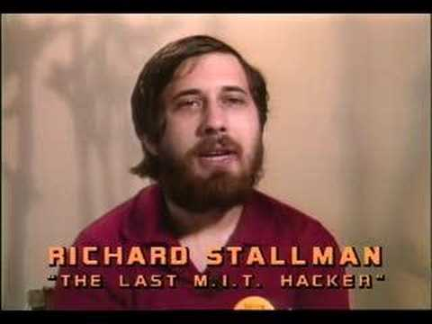

Biography
Richard Matthew Stallman (born March 16, 1953), often known by his initials, rms,[1] is an American software freedom activist and programmer. He campaigns for software to be distributed in a manner such that its users receive the freedoms to use, study, distribute and modify that software. Software that ensures these freedoms is termed free software. Stallman launched the GNU Project, founded the Free Software Foundation, developed the GNU Compiler Collection and GNU Emacs, and wrote the GNU General Public License.
Stallman launched the GNU Project in September 1983 to create a Unix-like computer operating system composed entirely of free software.[2] With this, he also launched the free software movement. He has been the GNU project's lead architect and organizer, and developed a number of pieces of widely used GNU software including, among others, the GNU Compiler Collection,[3] the GNU Debugger[4] and the GNU Emacs text editor.[5] In October 1985[6] he founded the Free Software Foundation. Stallman pioneered the concept of copyleft, which uses the principles of copyright law to preserve the right to use, modify and distribute free software, and is the main author of free software licenses which describe those terms, most notably the GNU General Public License (GPL), the most widely used free software license.[7] In 1989 he co-founded the League for Programming Freedom. Since the mid-1990s, Stallman has spent most of his time advocating for free software, as well as campaigning against software patents, digital rights management, and other legal and technical systems which he sees as taking away users' freedoms. This has included software license agreements, non-disclosure agreements, activation keys, dongles, copy restriction, proprietary formats and binary executables without source code.